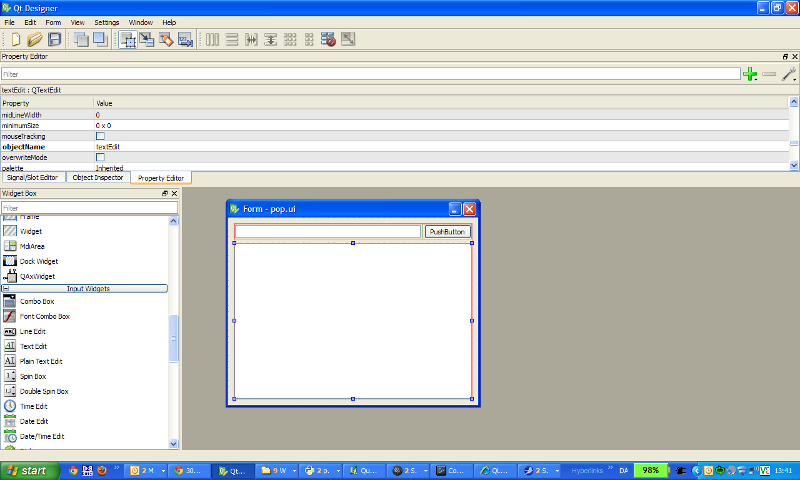

The python console lets you inerface with the python bindings for
TrLib allowing you to automatise trivial tasks by simple python
scripts.
You can extend the functionality by placing plugins in subfolders
in a folder named:
~/.trui/plugins
On windows, the users home directory ~ is typically: C:\Documents
and Settings\<my_user_name>
A plugin must be a python package (see
http://docs.python.org/2/tutorial/modules.html ) i.e. a
collection of scripts in a folder which contains a __init__.py
script. This file can be completely blank in which case it just
marks that the files in the folder should be considered a package.
Two types of plugins can be created:
def classFactory(mainWindow): #should return a QWidget
from my_widget import my_cool_widget #Gui part set up in this class - functionality can be implemented there, as well as in other scripts in the package.
return my_cool_widget(mainWindow)
def getName():
return "A really cool plugin"
 QtDesigner can be used to set up the UI part of a plugin.